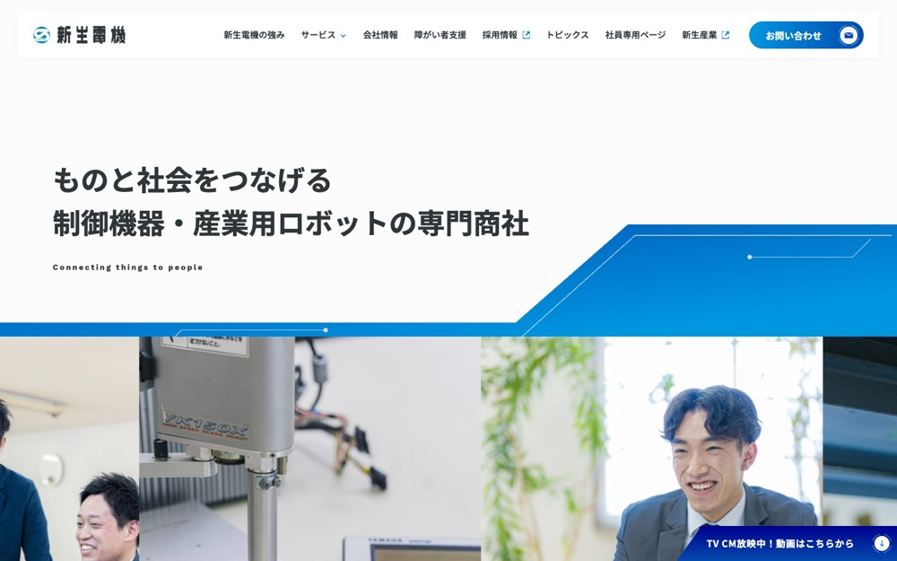

新生電機
#fcfcfc の地に #022a60 を大きな面で置く配色。影を使って浮かせる。本文 15px・行間 2、セクション間 40px。
配色
文字色は #f8f9fa / #2f3639 / #cccccc / #008ddb。
どこに使っているか（箇所数）
| 色 | 面 | 文字 | 枠線 | ボタンの地 |
|---|---|---|---|---|
#022a60 |
1 | 1 | 0 | 0 |
#fcfcfc |
7 | 49 | 0 | 0 |
#f2f2f2 |
6 | 0 | 1 | 5 |
#2f3639 |
0 | 57 | 0 | 0 |
#cccccc |
0 | 6 | 0 | 0 |
#008ddb |
0 | 2 | 0 | 0 |
#022a60 は面として1箇所、文字として1箇所。塗りが主役。ボタンの地には使っていない。
文字
和文
Noto Sans JP欧文
Work Sans本文
15px / 行間 2この見本は Noto Sans JP で表示していますあのイーハトーヴォのすきとおった風
あのイーハトーヴォのすきとおった風
あのイーハトーヴォのすきとおった風
あのイーハトーヴォのすきとおった風
あのイーハトーヴォのすきとおった風
あのイーハトーヴォのすきとおった風
あのイーハトーヴォのすきとおった風
余白とかたち
| コンテンツ幅 | 1240px | |
|---|---|---|
| 読ませる段の幅 | 604px | |
| セクションの上下余白 | 40px | |
| 並びの間隔 | 8 / 10 / 14 / 34px | |
| 角丸 | 0px（大きな面は 32px） | |
| 影 | rgba(47, 54, 57, 0.04) 3px 3px 12px 0px | |
| 画面幅の切り替え | 1200 / 1024 / 782 / 767 / 600px |
ボタン
お問い合わせ
#f2f2f2 / 15px / 700 / 角丸 32px
もっと見る
transparent / 15px / 700 / 角丸 0px
もっと見る
#f2f2f2 / 15px / 700 / 角丸 22px
ページの組み立て
上から順に、実際に並んでいたセクション。高さの比率もそのまま。
1
ヒーロー（画像）
1180px
2
2カラム・画像あり
1120px
3
6カラム・画像あり
2240px
4
1カラム・画像あり
1600px
5
1カラム・画像あり
460px
6
1カラム・画像あり
1480px
全6セクション、すべて全幅。
面と、その上に置く線・文字
| 面 | 使用箇所 | 線と文字 |
|---|---|---|
#022a60 |
1 | #2f3639 |
#fcfcfc |
1 | #022a60 |
線と文字の色は固定ではなく、乗っている面で入れ替える。
部品
囲みらしい繰り返しの箱はなかった。枠で囲まず、余白だけで区切っている。
角丸は 0px だが、完全な円は別扱いで 7 箇所（16px×4、24px×1、32px×1）。角を丸めないことと、円のモチーフは両立する。
タグ
角丸 999px ／ 12px
PCとスマホ
同じサイトを390px幅で測り直した値。
| PC 1440px | スマホ 390px | |
| 本文 | 15px / 行間 2 | 15px / 行間 2 |
| 見出し | 34px | 14px |
| セクションの上下余白 | 40px | 32px |
| 左右の余白 | — | 0px |
| 並びの間隔 | 14px | 8px |
文字サイズの段は 22 / 16 / 15 / 14 / 12px。セクション余白はPCの80%まで詰める。
画像
3:4・10枚
4:3・10枚
3:2・3枚
23枚。角丸 0px。